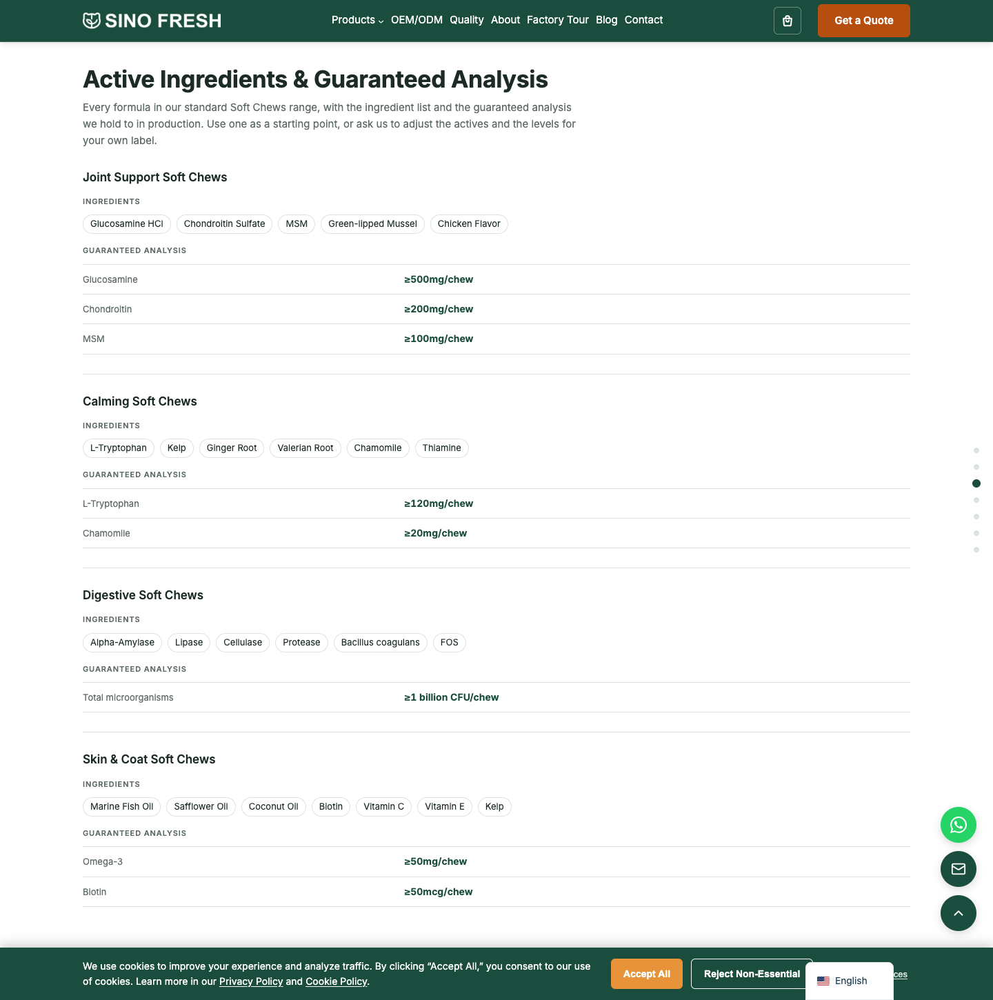
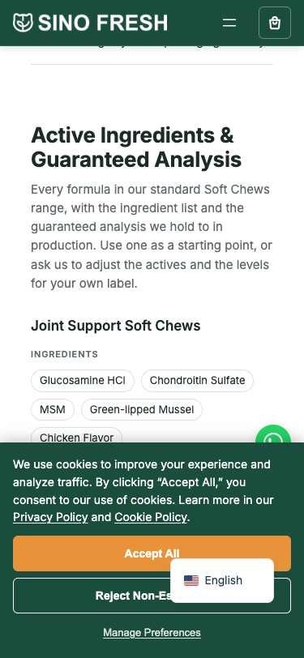
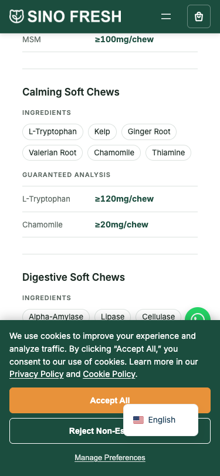
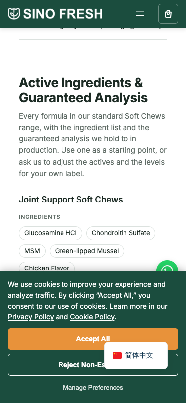

八个剂型页在「典型规格表」与「How We Work」之间新增服务端渲染的 Active Ingredients & Guaranteed Analysis
把新块从候选页里删掉之后，9 个带新块的页面全部与基线逐字节相同；而 38 个不带新块的页面本来就逐字节相同。
这意味着：除新块以外的每一个字节都没动 —— 配方卡数量与顺序、JSON-LD 全部载荷、入队资源清单、markup、空白，一字未改。
| 文件 | 变化 | 现字节 | 说明 |
|---|---|---|---|
functions.php | +191 / −1 | 156 120 | 2 个纯函数 + [sf_formula_actives]；版本号 bump |
style.css | +56 / −1 | 250 582 | 55 行新样式（41 行声明 + 14 行注释）；版本号 bump |
8 个剂型页模板，各 +9 行（8 行块 + 1 空行），插入段归一 form="…" 后 md5 全等（e54e6366049a001e） | |||
| page-soft-chews.html | +9 | 55 186 | 容器注释与 <section> 是块② #formulas 的原样序列化，只把 formulas→actives、sf-formulas→sf-actives；写入前脚本会做替换后等值断言 |
| page-tablets.html | +9 | 46 874 | |
| page-powders.html | +9 | 46 326 | |
| page-pastes.html | +9 | 44 411 | |
| page-drops.html | +9 | 44 822 | |
| page-liquids.html | +9 | 45 167 | |
| page-fish-oil.html | +9 | 46 656 | |
| page-dental-chews.html | +9 | 49 623 | |




| # | 项 | 判据 | 实测 |
|---|---|---|---|
| 1 | PHP 语法 | php -l functions.php | No syntax errors |
| 2 | 块配平 × 8 | b2c_s2_block_lint.py；/ --> 残留 | 8/8 PASS；自闭合各 3 个；"/ -->" 全仓 0 |
| 3 | 新块 8 页同构 | 归一 form="…" 后 md5 | 8/8 相等（e54e6366049a001e） |
| 4 | 掩码字节回归 | 预检 A/B → 归一 → sf_masked_cmp，先跑 A/A | 38/47 SAME；9 个 DIFF ＝ 8 剂型 + zh 版 |
| 5 | 限定证明 | 删掉新块后与基线逐字节比 | 47/47（带块 9/9，不带块 38/38） |
| 6 | 入队资源清单 | b2c_s2_ver_inventory.py | 仅 style.css 2.10.44→2.10.45；资源集合无增减 |
| 7 | JSON-LD 数据层 | 47 页解析后双向 deep-equal | 全等；additionalProperty 仍缺失 |
| 8 | K2 镜像 | .sf-formulas-data 逐值比 | A==B；条数 4/3/3/2/2/2/2/3＝21 |
| 9 | 渲染计数 | items/pills/rows 对干跑预测 | 8/8 逐页相符；无空 <li>/<dd> |
| 10 | 配置器 | 4 个 K1 按钮 → sessionStorage → 摘要卡 | 4 个在；"Joint Support Soft Chews" 入库；Shape→"Bone" 回填 |
| 11 | 点轨 | 项数 / 位置 / 逐项点击落位 | 7 项，新项第 3 位，7/7 落位 |
| 12 | 响应式 + i18n | 375 无横向滚动、药丸换行、zh 200 | scrollW 375＝clientW 375；zh 渲染同块；未碰图片 |
| 页面 | 配方条目 | 成分药丸 | 保证值行 |
|---|---|---|---|
| /products/soft-chews/ （含 zh 版） | 4 | 24 | 8 |
| /products/tablets/ | 3 | 18 | 7 |
| /products/powders/ | 3 | 10 | 3 |
| /products/pastes/ | 2 | 9 | 4 |
| /products/drops/ | 2 | 6 | 2 |
| /products/liquids/ | 2 | 11 | 6 |
| /products/fish-oil/ | 2 | 6 | 8 |
| /products/dental-chews/ | 3 | 15 | 5 |
| 合计 | 21 | 99 | 43 |
剂型页的 Product JSON-LD 解析器读的是磁盘模板文件（templates/page-*.html），
它要的模式是 <span class="sf-spec-term">…</span><span class="sf-spec-value">…</span>（两 span 之间零空白）。
Product 块数 1 未新增第二个 Product 含 additionalProperty false ← 仍然缺失（本批无 schema 污染） 页面里有 class="sf-spec-term" true 来自新块的 <dt class="sf-spec-term"> 页面里有 <span class="sf-spec-term"> false 解析器要求的精确模式仍不存在 模板文件里有 sf-spec-term false 解析器读的那个文件里根本没有这个字符串
① 解析器读磁盘模板，模板里只有一行短代码；② 即便改读渲染结果，它要的是 <span>，
而新块产出的是 <dt>。两道锁各自独立成立。
Every Soft Chews recipe in our standard range, …，
实施时改为 Every formula in our standard {Label} range, …。/services/ 的 A/A 自检（改前状态）就失败：Gravity Forms 的电话国家下拉
id gform_phone_dropdown_<微时间种子哈希> 每次请求都不同，实测连续三次拿到三个不同值。
⇒ 已给掩码集补 gform_phone_dropdown_[0-9a-f]+ 一条；补后 A/A 在
/services/、/products/soft-chews/、/formulas/ 三处全部 PASS。--user。 dev 站 Basic Auth 后，不带凭据的 curl 会拿到 401 页面，
两侧哈希同一个错误页 ⇒ 静默全绿。已显式要求凭据并写进文档。install 里的 rm -f log 会把基线趟
"门确实触发过"的证据删掉，已改为轮转保留。git revert 58e24eb —— 10 个文件同一个 commit，纯新增，不改 post meta / 模板路由 / K1·K2·K7sinofresh-theme/_backup/b2d-step1-20260920-225306/（10 文件 + 带 sha256 的 MANIFEST）#actives 段与该 H2 消失；点轨回到 6 项；style.css?ver=2.10.44.sf-spec-term 在同一页上现在有两个出处：块④规格表原本不含该类，新块的
<dt class="sf-spec-term"> 是首次出现。当前 assets/js/ 与 includes/
中无任何脚本消费 .sf-spec-*（已 grep 复核为空），CSS 侧已用 .sf-actives 限定作用域。
日后若有人写页面级 .sf-spec-term 选择器，会同时命中两处。这是本批唯一的结构性代价。<title>、≤1239px 内页 hero 文字贴边 —— 均不在本批范围。批次 2D 第 1 批 · 全档见 docs/batch2d-step1.md · 方案见 docs/batch2d-step1-plan.md · 取证图 docs/b2d-step1-shots/